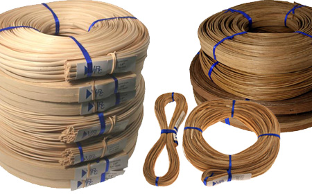

Basket weaving is a craft that is thousands of years old. That said, the best quality baskets are weaved from the best
quality supplies. As such, I have compiled a table of supplies that should be more than sufficient for anyone's basket
weaving needs, whether they be a novice or a professional.

| Item | Price | Use |
|---|---|---|
| 1/4 Flat Reed | $10.95 | Light duty |
| 1/2 Flat Oval Reed | $10.95 | Heavy duty |
Source:Basketweaving.com